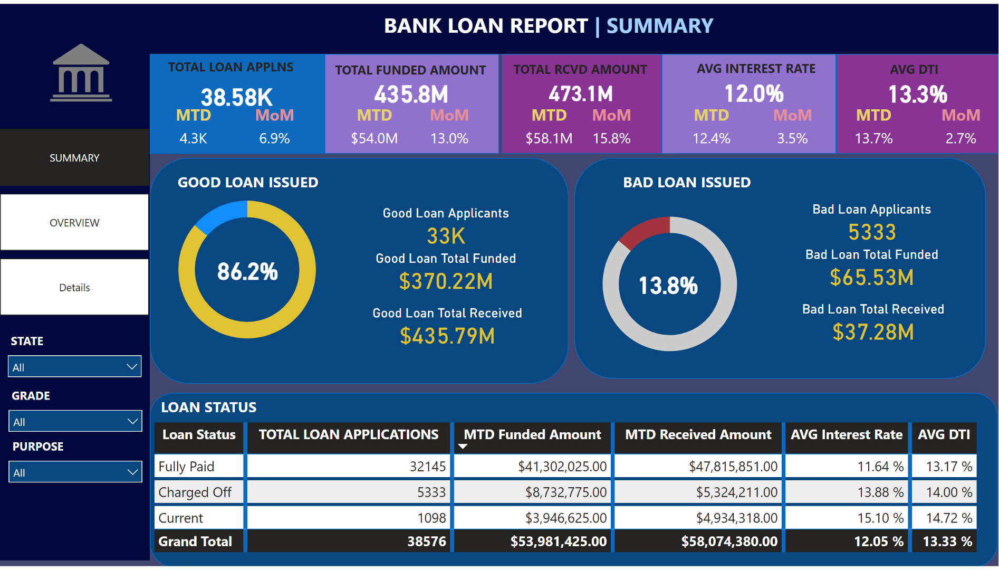
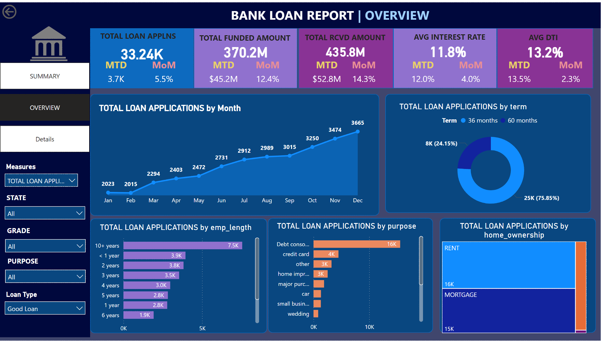
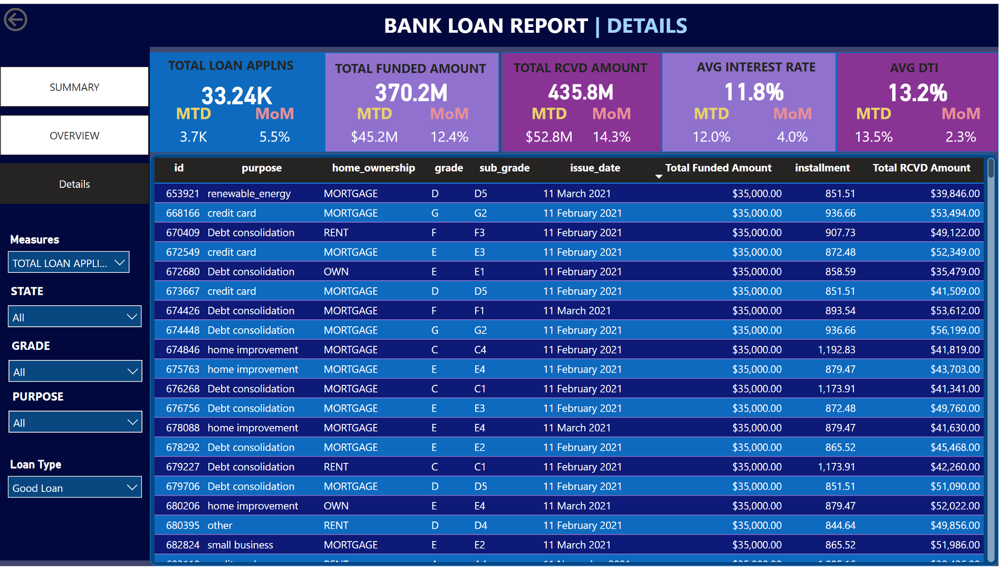

Bank Loan Analysis Report
A comprehensive, three-tier dashboard designed to transform raw financial data into a guided and actionable executive narrative, monitoring lending health and risk exposure.
Executive Data Storytelling Narrative
This narrative highlights the core findings for the quarter, guiding stakeholders through performance, risk, and growth drivers.
I. Portfolio Performance: Strong Momentum
The loan portfolio demonstrates robust lending momentum. The total funded amount shows a significant MoM increase of 13.0%, reflecting accelerated demand and successful disbursement. Despite this rapid growth, the portfolio remains highly stable: 86.2% of all loans are categorized as "Good Loans." The Average Interest Rate is also slightly up at 12.0%, indicating effective risk pricing alongside volume growth.
II. Applicant Profile and Risk Management
Analysis of the Overview dashboard reveals a highly desirable core borrower profile. The largest segment of applicants demonstrates significant stability, with the majority having 10+ years of employment length. The primary driver for new applications is **Debt Consolidation**, accounting for over 16,000 applications. While the Average Debt-to-Income (DTI) ratio is at 13.3%, the Details page is crucial for monitoring outliers and ensuring the 13.8% "Bad Loan" segment (Charged Off) is managed aggressively.
III. Actionable Insights
- Growth Strategy: Continue to target the Debt Consolidation segment, leveraging the strong demand confirmed by the 75.85% preference for 60-month loan terms, securing longer-term interest revenue.
- Risk Focus: Utilize the Loan Status Grid on the Summary page to immediately flag and investigate the Current and Charged Off status categories to contain the $65.53M funded for Bad Loans.
Core Competencies Demonstrated
Data Modeling & ETL
Structured complex, transactional loan data, established robust relationships, and applied necessary Power Query transformations for optimal efficiency and integrity.
Advanced DAX & KPIs
Engineered complex financial calculations: Month-to-Date (MTD), Month-over-Month (MoM) Variance, and dynamically calculated financial ratios like Average DTI for performance management.
Information Design & UX
Implemented a three-tiered structure (Summary, Overview, Details) guiding users from high-level performance metrics down to granular transactional data for deep analysis.
Data Storytelling & Narrative
Translated quantitative insights (e.g., 86.2% Good Loan rate, 13.0% MoM Funding Growth) into clear, decisive narratives for executive stakeholders.
Dashboard Visualizations
Replace the generic image source below with the actual file path of your uploaded dashboard screenshots.
1. Summary Dashboard: Portfolio Health
Displays high-level KPIs, including Total Funded Amount and Average Interest Rate, and provides the critical split between Good Loans (86.2%) and Bad Loans (13.8%).

2. Overview Dashboard: Market & Borrower Segmentation
Provides context for the summary metrics, breaking down applications by Loan Term, Employment Length (e.g., 10+ years), Loan Purpose (e.g., Debt Consolidation), and Home Ownership status.

3. Details Dashboard: Transactional Auditing
Offers the lowest level of detail, enabling users to audit specific transactions. Includes $\text{ID}$, $\text{grade}$, $\text{issue date}$, $\text{funded amount}$, and $\text{installment}$ for targeted risk review.
